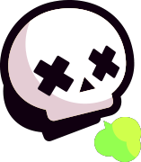
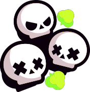
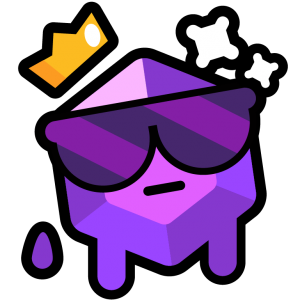
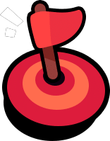
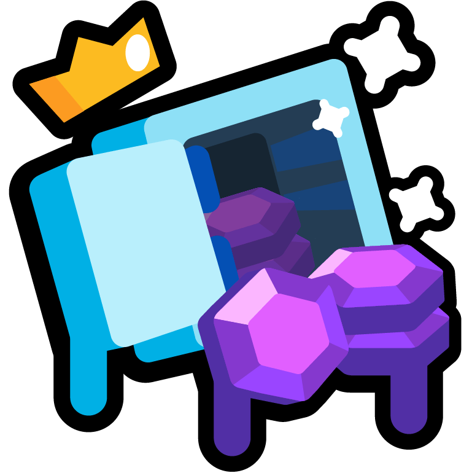

Principais Modos De Jogo
Combate Solitário

Combate Solitário: É um modo de jogo onde o jogador aparece em um mapa junto com outros 9 players, cada um luta do seu jeito, o importante é cumprir o objetivo final que é ser último a restar no campo de batalha. Para auxílio do player, ao redor do mapa são espalhadas caixas que contém "Power Cubs" que nada mais são do que pequenos cubos que ao serem consumidos melhoram a força e agilidade do Jogador.
Combate Duplo

Combate Duplo: Funciona exatamente da mesma forma que o Combate Solitário, porém com um diferencial, neste combate o jogador pode formar uma dupla com um amigo ou começar uma partida com uma pessoa aleatória.
Combate Triplo

Combate Triplo: Funciona exatamente da mesma forma que o Combate Solitário e Duplo, porem este modo de jogo pode ser jogado com até três amigos ou com pessoas aleatórias.
Nocaute
O Nocaute é um modo 3 vs 3 , este jogo possui 3 rounds, o primeiro time que perder os 3 players perde um round, caso perca 2 rounds é eliminado, concedendo a vitória ao time adversário.
Pique Gema

O Pique Gema é um tipo de jogo 3 vs 3 que consiste em coletar gemas que aparecem de forma frequente e sequencial no meio do mapa, o primeiro time a coletar 10 gemas e permanecer com as mesmas por 15 segundos vence!
Fute Brawl
O Fute Brawl é um modo de Futebol 3 vs 3,sendo o objetivo de cada time marcar 2 gols antes que o tempo acabe, o time que alcançar os dois gols vence. Porém caso cada time tenha marcado um gol e o tempo acabe,é marcado 1 Min e 30 Seg no relógio como prorrogação, se ainda assim, na prorrogação, nenhum dos times marcar o segundo gol, a partida tem um empate como desfecho.
Zona Estratégica

A Zona Estratégica é um modo de jogo 3 vs 3 onde vence o time que permanecer por 100 segundos dentro Círculo Vermelho localizado no centro do mapa, para vencer esse tipo de jogo, é de suma de importância que seu time escolha brawlers com um bom controle de área.
Caça Estrelas
O Caça Estrelas é um modo 3 vs 3 de mata-mata, cada vez que você eliminar um inimigo uma estrela surgirá na sua cabeça, conforme for ganhando mais estrelas elas irão se acumular em cima de você, vence o primeiro time que adquirir 20 estrelas. Lembrando, se você for eliminado, todas as estrelas que você acumulou serão transferidas a pessoa que te eliminou.
Roubo

O modo de jogo Roubo consiste em um 3 vs 3 onde vence o time que quebrar o cofre inimigo primeiro, cada cofre se localiza em um polo do mapa, o cofre do mapa azul no polo sul e o cofre inimigo no polo norte. Neste modo busque sempre brawlers com um dano contínuo e massivo, ja que para destruir o cofre inimigo é necessário inflingir 50 Mil de dano no mesmo.
Modos Extras
O modo de jogo Roubo consiste em um 3 vs 3 onde vence o time que quebrar o cofre inimigo primeiro, cada cofre se localiza em um polo do mapa, o cofre do mapa azul no polo sul e o cofre inimigo no polo norte. Neste modo busque sempre brawlers com um dano contínuo e massivo, ja que para destruir o cofre inimigo é necessário inflingir 50 Mil de dano no mesmo.